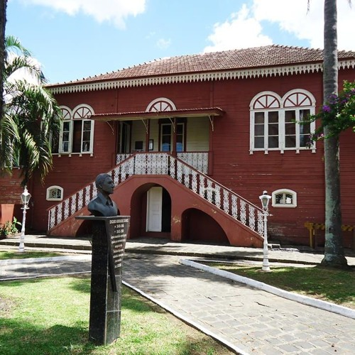
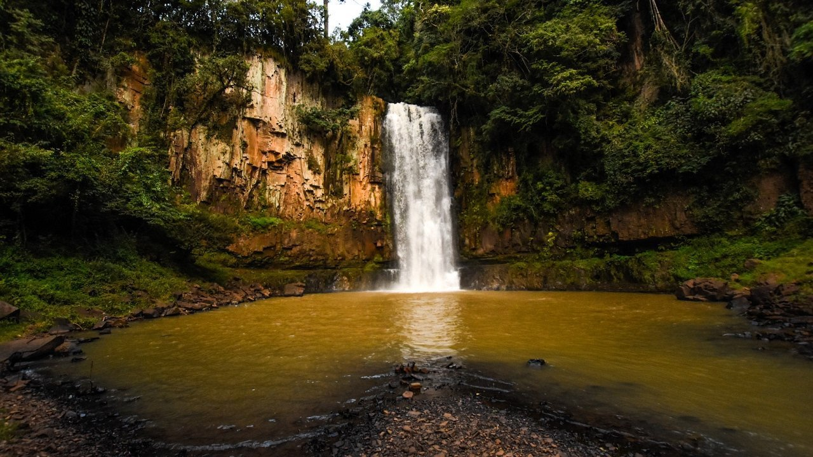

Colina Nossa Senhora das Graças
Conhecido como Morro da Santa, a colina possui um mirante e tem vista para o centro e demais bairros da cidade, possui também uma capela utilizada para orações e missas ocasionais,a população pode utilizar do local gratuitamente.A imagem da capela possui 22m de altura, sendo considerada uma das maiores imagens da Santa no mundo.

Parque Aquático
Parque conhecido na cidade, é um lugar público onde as pessoas podem desfrutar de um momento de lazer, com parque, academia ao ar livre, quadras esportivas e de skate, ciclofaixa dentre outros atrativos, além de ter um lindo lago e uma natureza de tirar o fôlego.
Casa da Cultura
É uma espécie de museu localizado no centro da cidade, guarda relíquias da cidade e pode ser visitado, fazendo com que mais pessoas saibam da história e curiosidades que a cidade guarda.
Natureza
O que Irati mais tem é natureza e cachoeiras ao seu redor e adentro da cidade então, por que não explorar a natureza com uma atração mais linda que a outra? Um exemplo de atração desse tipo é a Cachoeira do Pinho de Baixo e muitas outras espalhadas por aí para vir conhecer.
